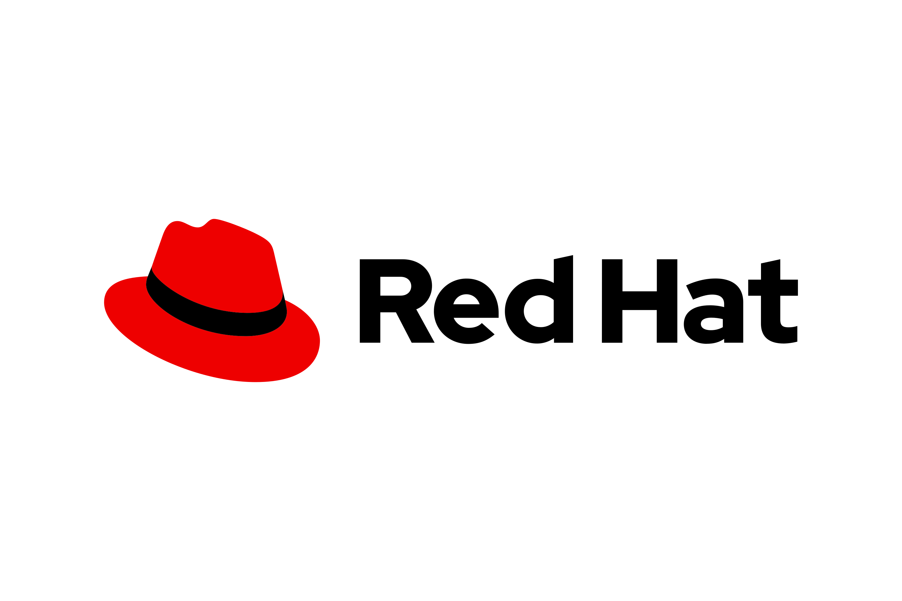

Article 1
Redhat Blog
Cet article présente comment la solution Ansible Automation Platform de Red Hat peut contribuer à sécuriser les infrastructures réseau en automatisant l'application des principes du Zero Trust. Cette approche de cybersécurité consiste à ne pas accorder de confiance implicite aux utilisateurs, aux appareils ou aux connexions, et à contrôler les accès selon des règles définies.
Lire l'article
Article 2
Medium
L'article présente l'utilisation d'Ansible, un outil open source permettant d'automatiser l'administration des serveurs informatiques. Il explique comment centraliser la gestion de plusieurs machines Linux afin de simplifier leur configuration et le déploiement de services.
L'auteur décrit la mise en place d'un serveur de contrôle Ansible qui communique avec les machines distantes grâce au protocole SSH. Les tâches à effectuer sont définies dans des fichiers YAML appelés Playbooks. Ces fichiers permettent notamment d'installer des logiciels, de créer des fichiers de configuration et de déployer des services.
Lire l'article
Article 3
Cisco Blogs
Dans cet article, Cisco présente, en collaboration avec NVIDIA, une nouvelle approche appelée AI Inference Routing, qui vise à optimiser l'utilisation des ressources informatiques réparties sur plusieurs sites.
L'objectif est de permettre aux fournisseurs de services de mieux exploiter leurs serveurs, leurs centres de données et leurs infrastructures réseau pour exécuter des applications d'intelligence artificielle.
Lire l'article